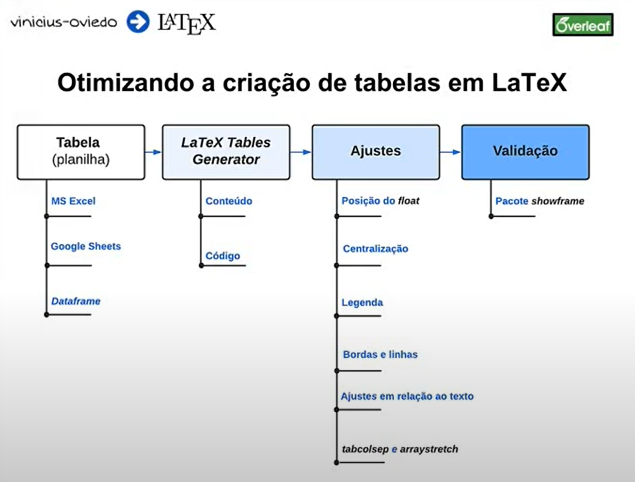
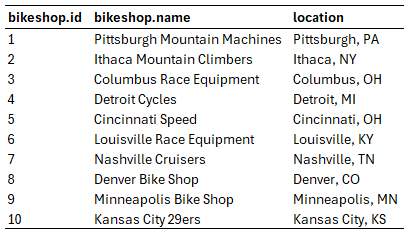

Ferramentas
Certamente, existem ferramentas que nos auxiliam a otimizar a criação de tabelas em LaTeX. Alguns exemplos são:
- LaTeX tables generator
- Table Convert
- Plugins do MS Excel (e.g.,
Excel2LaTeX)
- Python (o pacote
pandas tem suporte para TeX)
Essas ferramentas são incríveis, porém, elas não fazem todo o trabalho. Normalmente, dependendo da complexidade da tabela, é preciso implementar alguns ajustes. Por esse motivo, é interessante entender o básico sobre a estrutura de tabelas em LaTeX. Segue o processo que utilizei/utilizo ao longo tempo trabalhando com tabelas em LaTeX:

Exemplo (LaTeX tables generator)
Reproduza a tabela a seguir, fazendo uso de ferramentas auxiliares:
